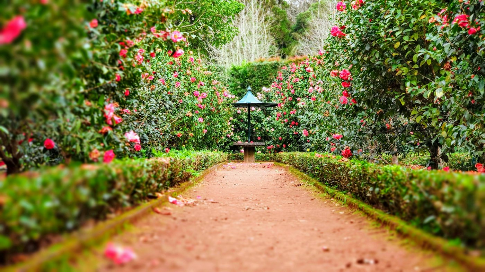
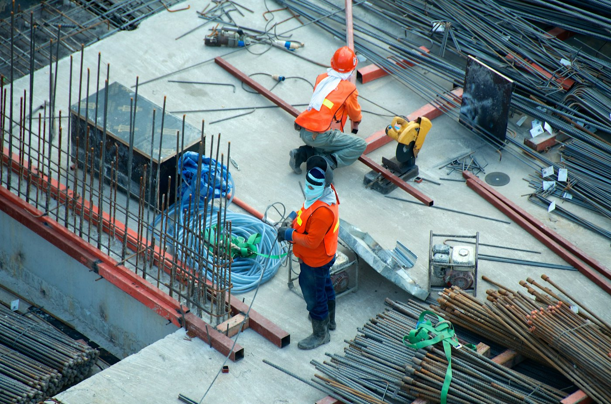

Architectural concrete formwork & hard landscaping.
GERCAN Enterprises Inc. forms the walls, stairs, slabs, and site concrete, then builds the patios, walks, and terraces that finish the ground. Based in Victoria. Working all of Vancouver Island and the Lower Mainland.
Reference image Architectural concrete — the line of the form is the finish.
01 Architectural formwork
02 Hard landscaping
03 Site concrete
04 Residential & light commercial
The practice
Structure first. Then the ground people actually use.
Formwork decides the face of the concrete. Hard landscaping decides how a site is walked, driven, and held. GERCAN builds both — for homeowners, designers, and other builders who need the concrete scope done to the drawings.
Current job photos live on Instagram at @gconstructioninc. The pictures on this site show the kinds of concrete and hardscape we build. They are reference images, not a claimed project list.
Services
What we put in the ground.
Reference image
01
Architectural concrete formwork
Walls, stairs, slabs, and feature elements where the stripped face is part of the design. Board-formed or smooth, with reveals, curves, and arrises set out from the drawings.
Board-formed and smooth architectural walls
Feature stairs, landings, and cheek walls
Slabs on grade and suspended slabs
Curved, battered, and revealed formwork
Layout from drawings and site benchmarks

Reference image
02
Hard landscaping
The permanent surfaces around a building: patios, walks, driveways, steps, and terraces, edged so planting and drainage still work.
Patios, walks, and entry courts
Driveways and parking pads
Garden steps and terraces
Landscape retaining walls
Broom, smooth, and exposed finishes

Reference image
03
Building & site concrete
Foundations and the site concrete that lets the rest of the build proceed. We coordinate sleeves, rebar, and pour sequence with the other trades.
Footings, foundations, and grade beams
Structural and landscape retaining walls
Sleeves, block-outs, and embedments
Work with homeowners, designers, and builders
Reference
The kind of concrete and hardscape.
The bridge pour is our work. The other pictures are reference images, not a claimed project list. Current work is also on Instagram.
From Victoria, across the Island and the Lower Mainland.
The shop is based in Victoria. If the site is on Vancouver Island or in the Lower Mainland, ask — travel is part of the work.
Vancouver Island
Greater Victoria & the Saanich Peninsula
West Shore — Langford, Colwood, Sooke
Cowichan & Duncan
Nanaimo, Parksville & Qualicum
Comox Valley & Campbell River
The rest of the Island, including the west coast
Lower Mainland
Vancouver & the North Shore
Burnaby, New Westminster & the Tri-Cities
Richmond & Delta
Surrey, Langley & White Rock
Maple Ridge through the Fraser Valley
Process
How a job moves.
01
Site conversation
Drawings, grades, access, and what the concrete has to do — structure, finish, or both.
02
Scope & layout
We mark the work, confirm elevations, and sequence pours so other trades are not standing on wet concrete.
03
Form, reinforce, pour
Forms set to the line, steel and sleeves in place, then the pour. Architectural faces are protected while they cure.
04
Strip & handoff
Forms come off, edges are checked, and the surface is ready for the next trade or for use.
Quote
Tell us about the site.
Send the brief on Instagram and we will follow up. This form stays in your browser — it prepares a message you can paste into a direct message. There is no public phone line listed here yet.